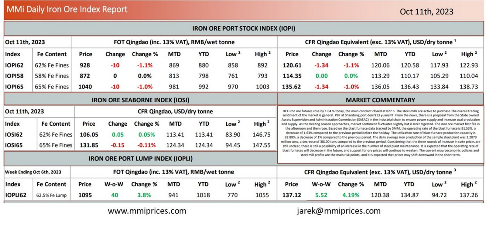

DCE iron ore futures rose by 1.04 % today, the main contract closed at 827.5. The steel mills are active to purchase.The overall trading sentiment of the market is general. PBF at Shandong port deal 913 yuan/mt. From the news, there is a proposal from the State owned Assets Supervision and Administration Commission (SASAC) in the industrial chain to ensure power supply and increase coal production and supply. As the heating season approaches, market sentiment fluctuates slightly but is later digested. The iron ore market first fell in the afternoon and then rose. Based on the blast furnace data tracked by SMM, the operating rate of the blast furnace is 91.53%, a decrease of 1.63% compared to the previous period before the holiday. The utilization rate of blast furnace production capacity is 92.88%, a decrease of 1% compared to the previous period. The daily average iron production of the sample steel plant was 2.2079 million tons, a decrease of 38100 tons compared to the previous period. Considering that the three rounds of increase in coke prices are still unclear, there is still a possibility of an increase in the number of steel plant maintenance. It is expected that the operating rate of blast furnaces will decrease in the future, and support for ore prices will continue to weaken. The current macroeconomic policies and steel mill profits are the main risk points, and it is expected that prices may shift downward in the short term.

Download PDFSource: Metals Market Index (MMi)